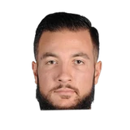

Joffrey Lauvergne:
“To be honest, Ty Lawson was not a troublemaker. He has just his own way of life. He never brought any problems in the locker-room. He's not a selfish guy.”

Joffrey Lauvergne on Ty LawsonBasket USA
8 quotes about Ty Lawson from 6 players, coaches and executives, newest first. Each one links to its original source.
Joffrey Lauvergne:
“To be honest, Ty Lawson was not a troublemaker. He has just his own way of life. He never brought any problems in the locker-room. He's not a selfish guy.”

Joffrey Lauvergne on Ty LawsonBasket USAGeorge Karl on Lawson’s demeanor:
“I need to turn his Dennis-the-Menace laziness into a committed professional. I’d love that to happen. Getting him to take some leadership and assertiveness has been a little bit of a push-and-shove match. Sometimes he pushes me, sometimes I push him to the wall, but in the same sense he’s moving in a good (direction).”
“We can have Ty Lawson handle the basketball, play Pat (Beverley) off the ball. You can play them together. We have a lot of different lineups, a lot of options with this team. I’ve very excited to see how it all is going to pan out. Good things are going to happen.”
What Ty Lawson has said about other players and coaches →
Joffrey Lauvergne:
“To be honest, Ty Lawson was not a troublemaker. He has just his own way of life. He never brought any problems in the locker-room. He's not a selfish guy.”
Mark Berman:Daryl Morey on @Ty Lawson:
“We're encouraged by the steps he's taken... we're going to continue to help him as an organization.”
Mark Berman:Kevin McHale on addition of Ty Lawson at Rockets media day:
“Ty will be really big but I let you know when we start playing.”
“We can have Ty Lawson handle the basketball, play Pat (Beverley) off the ball. You can play them together. We have a lot of different lineups, a lot of options with this team. I’ve very excited to see how it all is going to pan out. Good things are going to happen.”
Jonathan Feigen:Harden on addition of Lawson:
“Ty is definitely going to help us. He gives us that quickness, playmaking ability, something we we missing.”
Jonathan Feigen:Daryl Morey on Lawson deal:
“A lot of what we were hoping to accomplish before next season, he's able to do. He's another guy that can attack the basket, can shoot, can make plays for others. He's one of the best playmakers in the league.”
Benjamin Hochman:Connelly on the Ty Lawson video:
“There's often times poor judgement used by all of our players. ... It doesn't excite me.”
George Karl on Lawson’s demeanor:
“I need to turn his Dennis-the-Menace laziness into a committed professional. I’d love that to happen. Getting him to take some leadership and assertiveness has been a little bit of a push-and-shove match. Sometimes he pushes me, sometimes I push him to the wall, but in the same sense he’s moving in a good (direction).”